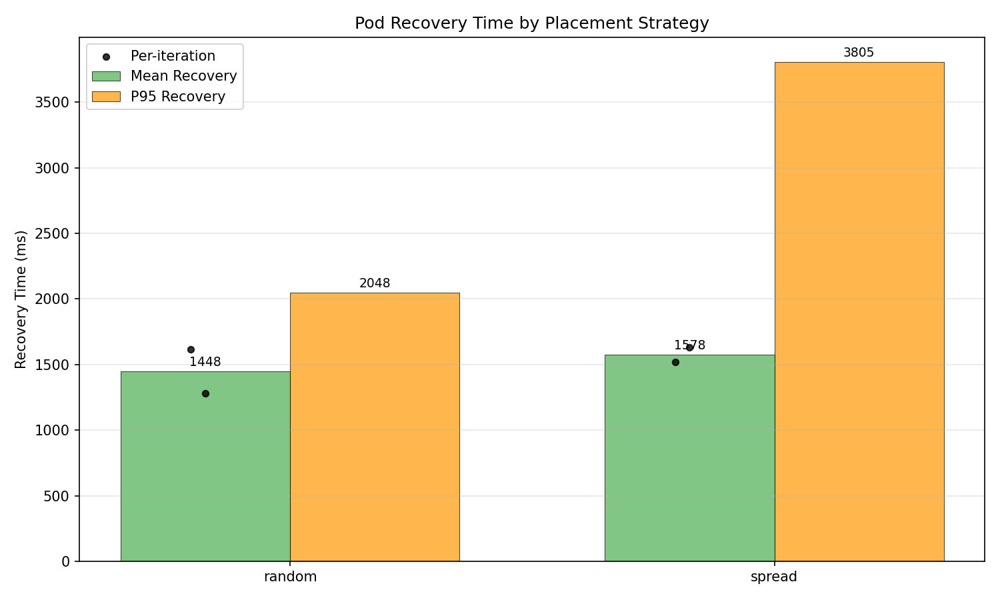
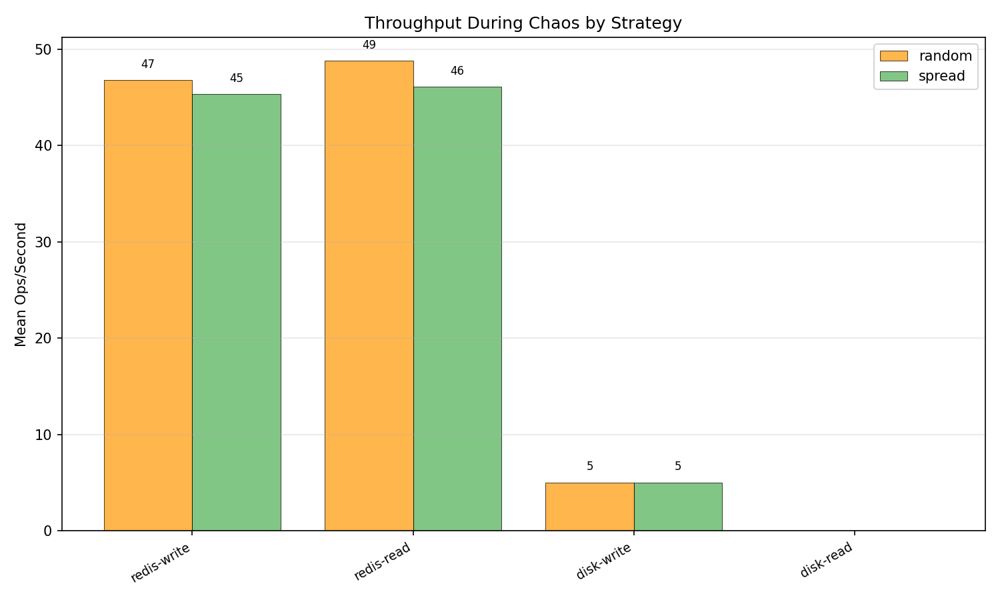
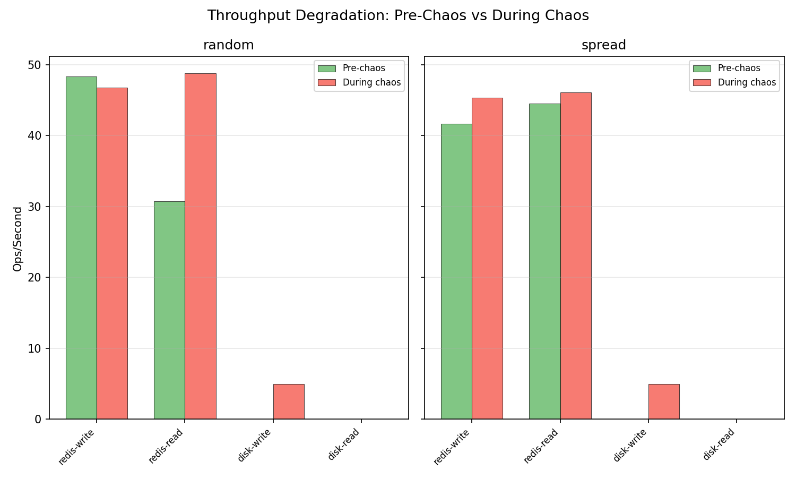
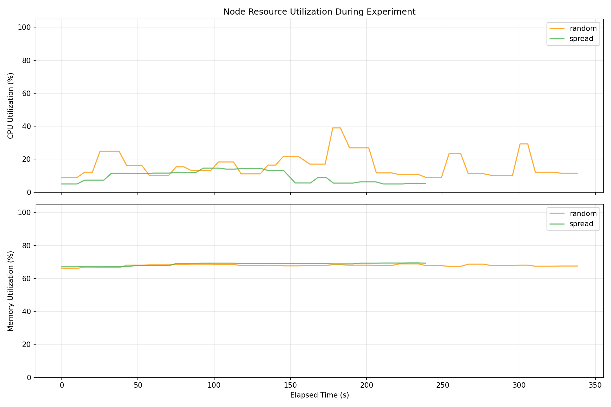
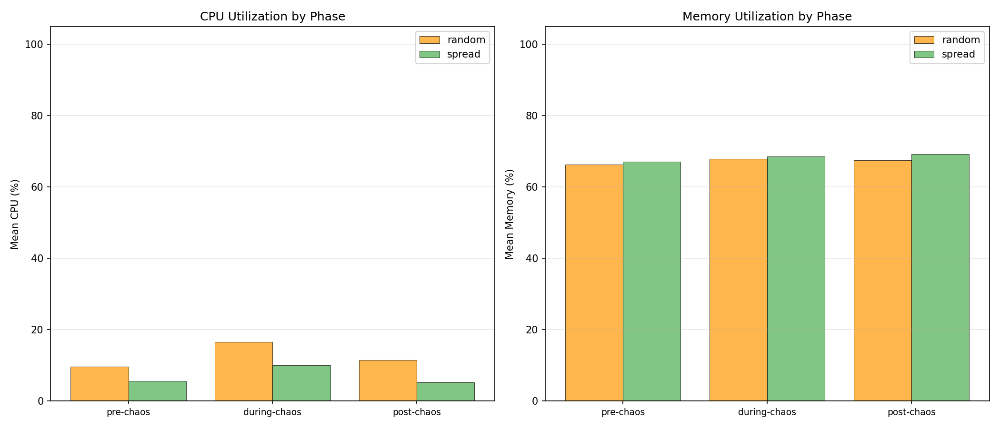
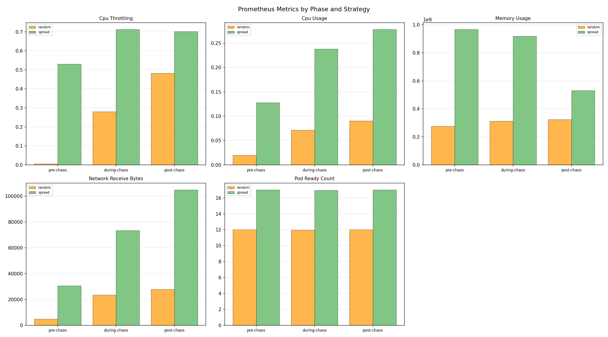

| Strategy | Runs | Avg Resilience Score | Pass Rate | Mean Recovery (ms) | Median Recovery (ms) | P95 Recovery (ms) |
|---|---|---|---|---|---|---|
| random | 2 | 0.0 | 0% | 1448.5 | 1448.5 | 2048.0 |
| spread | 2 | 0.0 | 0% | 1577.7 | 1577.7 | 3805.0 |
| Strategy | Route | Pre-Chaos Mean (ms) | During Chaos Mean (ms) | During Chaos P95 (ms) | Post-Chaos Mean (ms) | Errors During Chaos |
|---|
| Strategy | Operation | Pre-Chaos Ops/s | During Chaos Ops/s | During Chaos Latency (ms) | During Chaos Bandwidth | Post-Chaos Ops/s |
|---|---|---|---|---|---|---|
| random | redis-read | 30.8 | 48.8 | 21.28 | n/a | 53.1 |
| random | redis-write | 48.4 | 46.8 | 22.14 | n/a | 47.7 |
| random | disk-read | n/a | n/a | n/a | n/a | n/a |
| random | disk-write | n/a | 5.0 | 200.00 | 2.5 MB/s | n/a |
| spread | redis-read | 44.5 | 46.1 | 21.90 | n/a | 44.6 |
| spread | redis-write | 41.7 | 45.3 | 22.25 | n/a | 43.4 |
| spread | disk-read | n/a | n/a | n/a | n/a | n/a |
| spread | disk-write | n/a | 5.0 | 200.00 | 2.5 MB/s | n/a |
| Strategy | Phase | Mean CPU (%) | Mean Memory (%) | Samples |
|---|---|---|---|---|
| random | pre-chaos | 9.7 | 66.3 | 4 |
| random | during-chaos | 16.6 | 67.9 | 56 |
| random | post-chaos | 11.5 | 67.5 | 3 |
| spread | pre-chaos | 5.6 | 67.1 | 4 |
| spread | during-chaos | 10.0 | 68.6 | 38 |
| spread | post-chaos | 5.3 | 69.3 | 3 |
| Strategy | Metric | Phase | Mean | Max | Samples |
|---|---|---|---|---|---|
| random | cpu_throttling | pre-chaos | 0.0058 | 0.0058 | 2 |
| random | cpu_throttling | during-chaos | 0.2794 | 0.4992 | 28 |
| random | cpu_throttling | post-chaos | 0.4816 | 0.4816 | 1 |
| random | cpu_usage | pre-chaos | 0.0197 | 0.0197 | 2 |
| random | cpu_usage | during-chaos | 0.0716 | 0.1021 | 28 |
| random | cpu_usage | post-chaos | 0.0903 | 0.0903 | 1 |
| random | memory_usage | pre-chaos | 275222528.0000 | 275427328.0000 | 2 |
| random | memory_usage | during-chaos | 311933074.2857 | 324657152.0000 | 28 |
| random | memory_usage | post-chaos | 323063808.0000 | 323063808.0000 | 1 |
| random | network_receive_bytes | pre-chaos | 4853.8166 | 4877.4920 | 2 |
| random | network_receive_bytes | during-chaos | 23481.8904 | 33468.6312 | 28 |
| random | network_receive_bytes | post-chaos | 27791.5979 | 27791.5979 | 1 |
| random | pod_ready_count | pre-chaos | 12.0000 | 12.0000 | 2 |
| random | pod_ready_count | during-chaos | 11.9643 | 12.0000 | 28 |
| random | pod_ready_count | post-chaos | 12.0000 | 12.0000 | 1 |
| spread | cpu_throttling | pre-chaos | 0.5308 | 0.5396 | 2 |
| spread | cpu_throttling | during-chaos | 0.7123 | 0.8198 | 19 |
| spread | cpu_throttling | post-chaos | 0.7017 | 0.7113 | 2 |
| spread | cpu_usage | pre-chaos | 0.1279 | 0.1280 | 2 |
| spread | cpu_usage | during-chaos | 0.2378 | 0.2888 | 19 |
| spread | cpu_usage | post-chaos | 0.2779 | 0.2817 | 2 |
| spread | memory_usage | pre-chaos | 966572032.0000 | 968318976.0000 | 2 |
| spread | memory_usage | during-chaos | 919456282.9474 | 1036603392.0000 | 19 |
| spread | memory_usage | post-chaos | 530518016.0000 | 531116032.0000 | 2 |
| spread | network_receive_bytes | pre-chaos | 30619.3432 | 31686.2181 | 2 |
| spread | network_receive_bytes | during-chaos | 73420.2804 | 100839.3710 | 19 |
| spread | network_receive_bytes | post-chaos | 104787.0736 | 106770.0065 | 2 |
| spread | pod_ready_count | pre-chaos | 17.0000 | 17.0000 | 2 |
| spread | pod_ready_count | during-chaos | 16.9474 | 17.0000 | 19 |
| spread | pod_ready_count | post-chaos | 17.0000 | 17.0000 | 2 |





